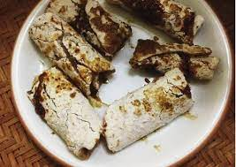

Share :
Selain kita bisa menemukan banyak tempat wisata yang indah di Buol masih kurang lengkap jika kita tidak mencicipi makanan khas yang ada di Buol, makanan khas di Buol sangat unik dan enak, makanan khas di Buol memang belum banyak di ketahui orang luar dari Buol, karena itu kita harus mencoba dan mencicipi makanan khas di Buol, makanan di Buol tak mau kalah dengan makanan khas yang ada di Indonesia.
.
Makanan Ambal biasanya di sebut oleh masyarakat di Buol yaitu Pizza nya yang ada di Buol, makanan ini sangatlah enak dan sangat unik ketika di makan, Ambal merupakan gabungan ikan dan sagu sangat lah menggugah selera para penikmatnya, ketika anda memakan ambal dengan satu suapan saja dijamin anda akan di buatnya ketagihan dengan makanan yang satu ini..

Tombouat merupakan makanan yang cara dibuatnya melalui di bakar, makanan yang satu ini sangat unik karena dari segi masaknya saja sudah terlihat enak. Tombouat berbahan dasar olahan ayam yang dibungkus di dalam daun pisang yang hijau, kenapa tombouat memakai daun pisang hijau karena makanan ini sangat mengutamakan wangi dari daun pisang tersebut, lalu di masukkan sagu ke dalam daun pisang bersama olahan ayam yang sudah di beri bumbu dan rempah-rempah lainnya..
Ketika sudah di masukkan ke dalam daun pisang, lalu siapkan tempat pembakaran karena Tombouat cara masakanya harus di bakar dan bisa membuat makanan ini menjadi lebih enak dan menarik, setelah selesai membuat tempat pembakaran lalu letakkan daun pisang yang berisi sagu dan olahan ayam tersebut ke tempat pembakaran tersebut, kita tunggu hingga matang dan kita bisa melihat dari daun pisang nya ketika sudah berwarna agak kecokelatan baru kita bisa angkat dan bisa di hidangkan..
Makanan yang khas dari Buol lainnya yaitu Boid atau jepa, makanan ini sangat banyak digemari dan banyak di cari oleh pengunjung baik itu dari masyarakat Buol maupun masyarakat luar dari buol seperti Manado dan yang lainnya..
makanan Boid ini sangatlah unik dan sangat lah enak ketika dimakan, Boid berbahan dasar Sagu yang di olah menjadi tumbang sagu, lalu Boid di kukus dalam wajan dan tunggu beberapa menit ketika sudah matang Boid langsung di potong tipis-tipis dan dibentuk sesuai yang kita mau, makanan boid ini sangat wajib anda coba ketika berada di Boul karena rasa nya unik dari olahan sagu sehingga menarik sekali untuk di coba..
